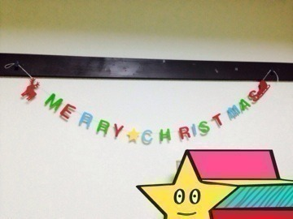
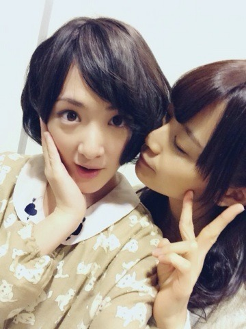

| 2014/01 09 Thu | そろそろ。 |
これ外さないとな〜。

お母さんにもらったやつ。
お母さんにもそろそろ外しなさいよ〜って言われて。
んで部屋の掃除したのに取り忘れてる。
ははっ。
今日こそ取ろう！
あぁ
本、
というか漫画が多い部屋だな〜。
お正月地元帰ったんだけどね。
親友たちと高校卒業したら卒業旅行行こうね〜とか遊びに行くからね〜とかしゃべってね。
漫画とかボカロとかとか趣味が120%合う子達なの♡
リヴァイ兵長のエレンを蹴る所のマネしたり、Free!について語ったり。
その他もろもろ。
私の高校生活は乃木坂46だからあんまり卒業か〜って実感わかないんだけど。
もし普通に秋田で高校生活してたらきっと今頃保育士、幼稚園教諭になるための大学を受けてたんだろうな〜。
高校三年生の皆さん！
もう受かった方は自由登校とかになるのかな？
残り少ない高校生活楽しんでください！
これから受験の皆さん！
受験のために一生懸命がんばった事は絶対かえってくるから、自分を信じて受験受けてきて下さい！
中3とか小6でもやる人いるよねっ⁈
他にも受験受けるかた頑張って下さいね〜！
春には楽しいことがいっぱい待ってるからねっ


まいまい〜(｡・・｡)
まいまいブログにコメントしたんだ笑
ココちゃん可愛すぎてこの感情を抑えられなくて伝えたかった笑
かわいいといえば
最近ピカチュウが好きすぎて切ない(´；Д；｀)
なんなのあの可愛さ。
昔はあんなころっとしてて可愛くて。
今は一瞬ピチュー⁈
くらいすっとなってるけどかわいい♡
ピカチュウかわいい〜！
とひとり机に携帯置いて書いてます。
皆さんいつも見てくれてコメントしてくれてありがとうございますm(_ _)m
へばなっ！☆
コメント(558)
2014/01/09 21:18